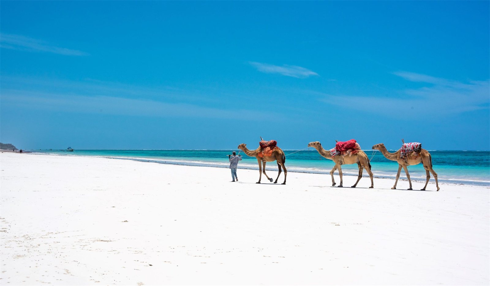
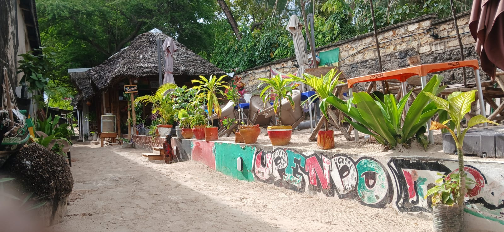
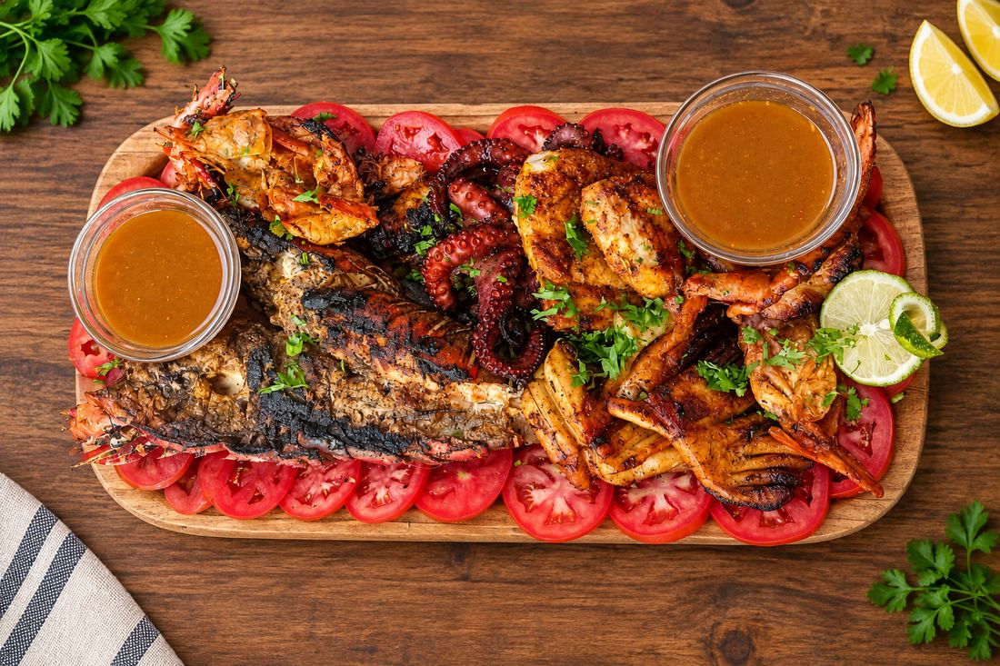
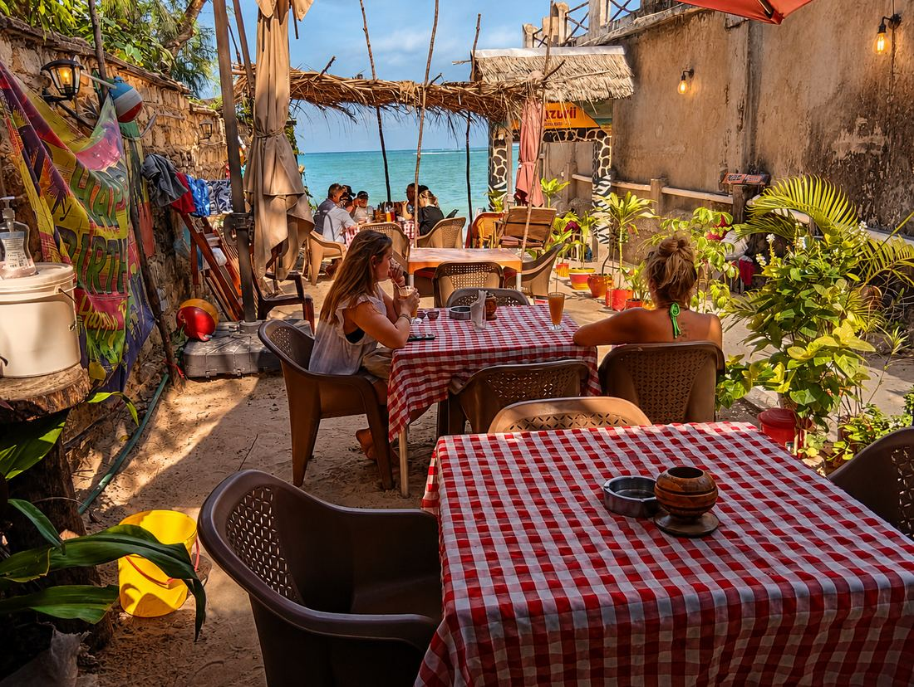
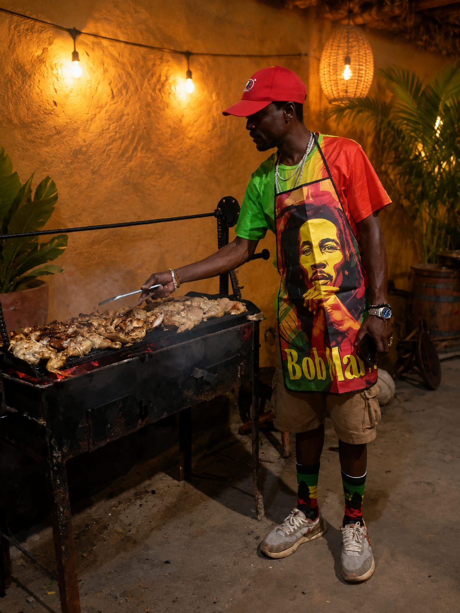
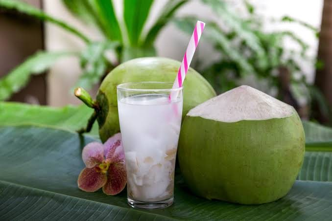
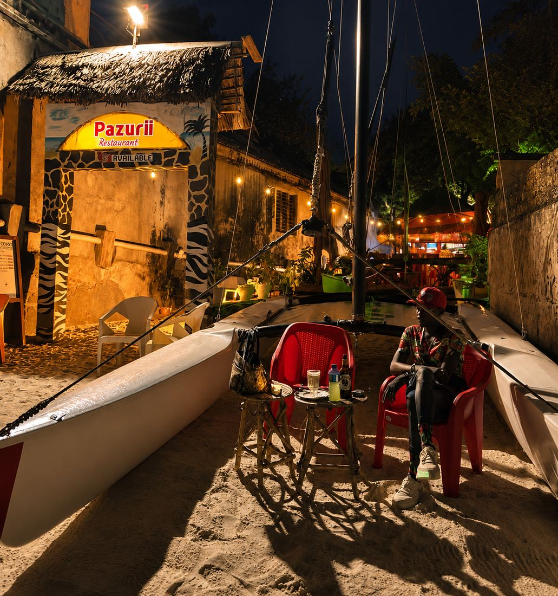

🦞
Fresh Seafood Daily
Ocean-fresh ingredients prepared with care and coastal inspiration.
Karibu · Bamburi Beach, Mombasa
Experience the taste of the Kenyan coast — ocean-fresh seafood, traditional Swahili dishes and charcoal grill favourites, served with the breeze at Bamburi Beach.
Karibu Pazuri · Our Story
Pazuri Beach Restaurant is a coastal dining experience built around great food, fresh ingredients and genuine Kenyan hospitality. Located near Bamburi Beach in Mombasa, we bring together the best flavours of the ocean and the traditions of the Kenyan coast.
From freshly prepared seafood and Swahili favourites to charcoal-grilled specialties, every dish is made to deliver generous portions, authentic taste and unforgettable moments — whether it's your first visit to Kenya or your hundredth day at this beach.
"Great food doesn't need to be complicated. It needs to be fresh, honest and prepared with care."


Kwa Nini Pazuri? · Why Choose Us
Ocean-fresh ingredients prepared with care and coastal inspiration.
Traditional coastal dishes made with local flavours and recipes.
Delicious food surrounded by the beauty and calm of the coast.
Quality meals, generous portions and prices that welcome everyone.
A favourite of Kenyan guests and travellers from around the world.
Chakula Chetu · Chef Recommendations
Picha Zetu · Gallery
A glimpse of life at Pazuri — food, fire, and golden-hour views by the water.





Wageni Wetu · Reviews
★★★★★
"The seafood platter was unbelievable — everything fresh, portions huge, and we ate with our feet basically in the sand. Best meal of our Kenya trip."
★★★★★
"Biriani kama ya nyumbani! Fair prices, big portions and the staff treat you like family. We come every time we're in Mombasa."
★★★★½
"Booked on WhatsApp in two minutes, table was ready by the water at sunset. The grilled lobster and dawa cocktail — perfect evening."
Mahali Petu · Find Us
Located near Bamburi Beach on Mombasa's north coast, Pazuri offers a relaxed dining experience where fresh seafood meets the flavours of Kenya. A short ride from the Bamburi hotels — ask for us by name.
Tuonane · See You Soon
Daily · 9:00 AM – 11:00 PM